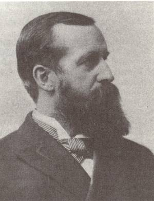

the manufacture
of ox shoes. He
gave up this business because of failing health, when he retired from
active life. Throughout his long business career, he was identified with
a variety of other ventures, including the Eagle Silk mills, the
Humphreysville Copper Company, the Bank of North America and others.

Charles
H.
Nettleton was born in New Haven, Connecticut in 1850. He moved to New
York City at an early age, where he attended the public schools and
graduated from the College of New York City, Class of 1870.
The following year he moved to Derby. He was in
charge of the construction of the Derby Gas Plant and held the office
of treasurer and general manager. This company supplied the electricity
and gas both private and public for Ansonia, Derby and Shelton. This
included electricity for the use of manufacturing establishments in
those communities.
In 1874, Nettleton was named manager of the
Birmingham Water Company. He later became treasurer of that
organization.